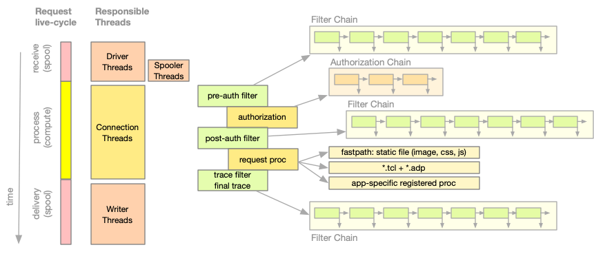
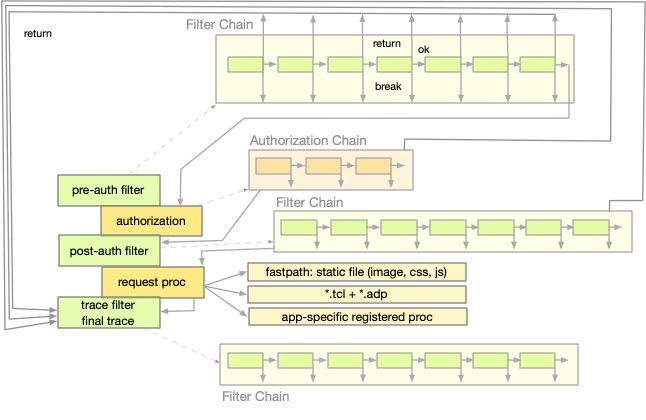

NaviServer Built-in Commands – 5.0.4
ns_register - Register Tcl/ADP handlers
This document describes various commands for binding Tcl code and/or ADP pages to URL patterns.
The request lifecycle consists of three primary phases: the receive phase, the processing phase, and the delivery phase. The commands detailed in this section focus on the processing phase, which is subdivided into several stages: pre-authorization, authorization, post-authorization, the request handler, and finally a trace stage.

Figure 1: Request processing (Threads and Request Handling Stages)
The functions in chain depicted in Figure 1 chart can be scripted or implemented in C and are distinguished by the following properties:
Filter Chains:
Processed sequentially
Wild-card match for filter procs based on method + path
Multiple matches in the filter chain possible
Result of proc determines whether to continue or terminate chain
Can send response to the client (e.g. redirects)
registered with ns_register_filter, ns_register_shortcut_filter, ns_register_trace
Response Authorization Chain:
Registered procs are processed sequentually
Procs can use ns_urlspace based on HTTP method and URL path to claim responsibility
Result of proc determines whether to continue or terminate chain
Can send response to the client (e.g. redirects)
registered with ns_register_auth request,
Request procs:
One proc per HTTP method + URL path
Proc is determined via urlspace
Proc performs typically heavy work (SQL, ADP, …)
Typically sends response for the request to the client (HTTP status code, response headers and content)
Registered with ns_register_adp, ns_register_proc, ns_register_fastpath, ns_register_tcl
The results of the procs in a chain determine, whether the chain should be continue, terminated and proceed to the next stage, or whether it should terminate the processing of the request completely. The return code of these procs is interpreted as follows:
TCL_ERROR: When the filter procs raises an error.
TCL_OK: When the script is executed successfully and ends with return -code continue (filters allow also return filter_ok).
TCL_BREAK: When the script is executed successfully and ends with return -code break (filters allow also return filter_break).
TCL_RETURN: When the script is executed successfully and ends with return -code return (filters allow also return filter_return).

Figure 2: Continuations and Stages
The following commands explain the details of the registration functions.
Requests matching the specified HTTP method and url will trigger the ADP page request handler. If file is provided, that file is used as the specific ADP page for all matching requests; otherwise, the ADP page is determined at request time using ns_url2file.
This command functions similarly to ns_register_tcl but registers an ADP file instead of a Tcl script.
Use ns_unregister_op to unregister an ADP request (described below).
Registers a Tcl-based authorization handler in the NaviServer auth chain. The first positional argument selects which chain to extend:
"request" - run for each HTTP request (arguments: method, URL, user, password, peer)
"user" - run for each username/password check (arguments: user, password)
If -authority is provided, its value is recorded as the handler’s label (visible e.g. via ns_auth … -dict); otherwise the command name passed as script is used. Any additional words after script are passed along as extra arguments to the callback when it is invoked.
If the -first flag is used, the authorization handler is added at the beginning of the filter list; otherwise, it is appended to the end. This logic of authorization chains is very similar to the handling of the filter chain (see ns_register_filter).
The function can signal the result of authorization by returning one of the following status codes:
OK - access granted
ERROR - internal error during authorization
FORBIDDEN - access denied, no possible retry
UNAUTHORIZED - authentication required or failed, retry possible
Furthermore, the functions can decide via the Tcl return code (return, break or continue) whether further authorization handlers (in case these are registered) or the request handler should be executed.
# Register a user authorization handler
ns_register_auth user ::authuser
# Define a minimal user authorization handler, that accepts a constant password.
# "-code break" prevents further authorization handlers to be called.
proc ::authuser {user passwd} {
return -code break [expr {$passwd eq "x" ? "ok" : "forbidden"}]
}
# Register a request authorization handler
ns_register_auth user ::authrequest
proc ::authrequest {method url user passwd peer} {
# very similar minimal logic similar to ::authuser
if {$passwd eq ""} {
return -code break unauthorized
}
return -code break [expr {$passwd eq "x" ? "ok" : "forbidden"}]
}
A slightly more elaborate example is provided in the documentation of the nsladp module.
Once registered, these callbacks will be invoked
by the server, when a request is issued, or
by the server, when a C module calls Ns_AuthorizeRequest() or Ns_AuthorizeUser(), or
by the ns_auth command:
ns_auth request ?-dict? ?--? method url authuser authpasswd ?ipaddr?
ns_auth user ?-dict? ?--? username password
Registers the specified url to be processed by the fast path subsystem. All matching requests will be served by the corresponding .adp file if it can be resolved. This option is useful when no global fast path handler is installed.
Note: The method argument is limited for this command to GET, POST, or HEAD.
Registers a Tcl filter script for the specified HTTP method and URL pattern. When a request matches the given method and URL (using glob-style matching), the registered script is invoked. The script is called with an extra argument indicating the filter stage, followed by any additional arguments specified at registration. If the -first flag is used, the filter is added at the beginning of the filter list; otherwise, it is appended to the end.
The first positional argument specifies the stage at which the filter is called:
preauth - called before authorization.
postauth - called after successful authorization.
trace - called after the HTTP response has been sent and the connection closed.
The filter is executed at the designated stage if the connection's method and URL match the provided pattern. For example, the following URL patterns are valid:
/employees/*.tcl /accounts/*/out
A filter procedure returns a value along with a Tcl return code. The return code is interpreted as follows:
TCL_ERROR: When the filter procs raises an error.
TCL_OK: When the script is executed successfully and ends with return -code continue or return filter_ok.
TCL_BREAK: When the script is executed successfully and ends with return -code break or return filter_break.
TCL_RETURN: When the script is executed successfully and ends with return -code return or return filter_return.
The behavior of filters depends on their type:
With pre-authorization, the filter is invoked just before authorization. If the filter returns:
TCL_OK: The server proceeds to the next pre-authorization filter, or if none remain, continues to authorization.
TCL_BREAK: No further pre-authorization filters are processed; the server continues to authorization.
TCL_RETURN: The server closes the connection without further processing of pre-authorization filters or the main request handler, but trace functions (e.g., logging) will still run.
With post-authorization, the filter is invoked after successful authorization. If the filter returns:
TCL_OK: The server proceeds to the next post-authorization filter, or if none remain, calls the registered request handler.
TCL_BREAK: No further post-authorization filters are processed; the registered request handler is called.
TCL_RETURN: The server closes the connection, skipping further post-authorization filters and the request handler, while still running any trace functions. It is assumed that the filter has already sent an appropriate response to the client.
Trace filters are invoked after the request has been processed, the HTTP response sent, and the connection closed. If a trace filter returns:
TCL_OK: The server proceeds to the next trace filter.
TCL_BREAK or TCL_RETURN: No further trace filters are executed.
Note: While ns_register_filter and ns_register_proc both register handlers for matching URLs, they differ significantly. With ns_register_proc, the registered URL matches the specified URL and all URLs beneath it in the hierarchy; wildcards such as "*" are only effective on the final URL component (e.g., `/scripts/*.tcl`). In contrast, filters use standard string-matching rules and multiple filters canmatch and be invoked for a single request.
Warning: Repeated execution of the same filter registration command (e.g., during Tcl reinitialization) will result in duplicate registrations and therefore duplicate executions. It is recommended to manage registrations using a shared variable to avoid duplicates. (Note that repeated executions of ns_register_proc with the same method/URL pattern will not cause duplicate registrations.)
The filter chain can be also terminated by a ns_shortcut_filter.
Registers a Tcl procedure or script to handle requests matching the specified HTTP method and url. When a request matches, the registered procedure is invoked with the arguments provided at registration. If script is a single Tcl word (without spaces), it is interpreted as the name of a Tcl procedure.
If the -noinherit flag is used, the request URL must exactly match the specified URL. For example, if you register a handler with /foo/bar using -noinherit, it will only be invoked for a request exactly matching /foo/bar.
Without -noinherit, the request URL may match the specified URL or any URL below it. For instance, registering /foo/bar without -noinherit will match /foo/bar, foo/bar/hmm, and any other URL beneath /foo/bar, provided no other procedure is registered for a closer match.
To enable filename inheritance, include a glob-style wildcard. For example, to have /foo/bar match /foo/bar.html, register the URL as:
ns_register_proc /foo/bar* ...
You can register two procedures for the same HTTP method and URL by invoking ns_register_proc twice - once with -noinherit and once without. Only one procedure will be invoked for a given request, depending on whether the URL is an exact match or an inherited match. For example:
ns_register_proc -noinherit GET /foo/bar A ns_register_proc GET /foo/bar B ns_register_proc GET /foo/bar/hmm C
In this scenario, A is called only when the request URL is exactly /foo/bar; B is invoked for URLs under /foo/bar (if no closer match exists); and C is called when the request URL is /foo/bar/hmm or beneath.
The following example demonstrates how to pass arguments at registration time to the registered Tcl command:
ns_register_proc GET /noargs noargs
ns_register_proc GET /onearg onearg 1
ns_register_proc GET /twoargs twoargs 1 2
ns_register_proc GET /threeargs threeargs 1 2 3
proc noargs { } {
ns_returnnotice 200 "testing" "noargs"
}
proc onearg { x } {
ns_returnnotice 200 "testing" "onearg gets $x"
}
proc twoargs { x y } {
ns_returnnotice 200 "testing" "twoargs gets $x $y "
}
proc threeargs { x y z } {
ns_returnnotice 200 "testing" "threeargs gets $x $y $z"
}
Registers a Tcl script as a handler for the specified method/protocol combination. By registering this command, NaviServer acts as a plain HTTP proxy server (also called a "forward proxy"), which handles outbound traffic on behalf of clients, shielding the client’s identity or controlling outbound traffic. This is different from a reverse proxy server, which is managing traffic towards internal servers (see revproxy).
Example of a trivial HTTP proxy server (Note: there is a much more elaborate reverse proxy server available as NaviServer module, which might serve as a model for this forward proxy).
ns_register_proxy GET http http_proxy_handler
proc http_proxy_handler { args } {
#
# Get the full URL from request line
#
if {![regexp {^\S+\s(\S.+)\s\S+$} [ns_conn request] . URL]} {
ns_log warning "proxy: request line malformed: <[ns_conn request]>"
ns_return 400 text/plain "invalid proxy request"
} else {
#
# Run the request
#
set d [ns_http run $URL]
set content_type [ns_set get -nocase [dict get $d headers] content-type]
ns_return [[dict get $d status] $content_type [dict get $d body]]
}
}
Registers a Tcl file to be invoked when a request matches the specified HTTP method and url. This command is typically used for extension-less URLs or for mapping physical files to virtual URLs. It works similarly to ns_register_adp, except that the file to be evaluated should be a Tcl script capable of generating a response using commands such as ns_return or ns_write.
If the file argument is omitted, the url2file mapping is used the determine a filename registered for the URL.
Use ns_unregister_op to unregister a Tcl request handler.
Registers a Tcl script as a trace filter for the specified HTTP method and urlpattern. Trace filters are executed after the main request and are only invoked for successful requests (i.e., no server errors occur).
A filter registered this way behaves exactly like a filter registered via ns_register_filter trace, except that on the for the registered command, no reason code is added as the first argument when the trace filter is called, and its result is not subject to the special result handling.
These commands are used for runtime resolution of requested URLs to corresponding files that will be served to the client. They utilize the ns_url2file interface to resolve the file associated with the current URL. The ns_register_fasturl2file command registers the default fast url2file procedure for the given url. The Tcl script provided to ns_register_url2file is expected to return the full path corresponding to the requested URL.
Registers a special "shortcut" filter that cancels further of a filter chain. Once this shortcut filter was called, any subsequent filters matching the specified stage, HTTP method, and URL pattern are bypassed. This mechanism is particularly useful for efficiently preventing unnecessary filter execution when a terminating condition has been met.
The shortcut filter functions identically to a standard filter that returns TCL_BREAK, but it is implemented more efficiently.
Unregisters a request handler for the specified HTTP method and url combination. This command removes any Tcl or C functions previously registered for this method/URL pair that share the same inheritance setting. The command unregisters commands request handlers registered e.g. with the following commands: ns_register_adp, ns_register_cgi, ns_register_fastpath, and ns_register_proc.
The option -allconstraints implies that all context constraints are deleted. When the option -noinherit is used, only the values set with -noinherit are deleted, and vice versa.
The -server parameter specifies the (virtual) server from which the handler should be unregistered. If omitted, the current server is assumed.
Unregisters a URL-to-file resolver previously registered with ns_register_url2file. The -noinherit flag and -server parameter function as described before.
The HTTP method, such as HEAD, GET or POST, which will be compared using exact string equality to the HTTP request.
foreach method {HEAD GET POST} {
ns_register_adp $method /foo/bar "hmm.adp"
}
The url pattern to match against the URL in each HTTP request. The last component of the URL may contain the globbing characters * and ?.
ns_register_adp GET /dynamic/*.htm?
In this example, a URL where the last component matches the pattern *.htm?, such as /dynamic/foo.htm or /dynamic/a/b/c/bar.html, will be run by the ADP engine.
Only the last component of the URL may be a pattern. If this is too restrictive, try using ns_register_filter.
The optional argument file is either an absolute path to a file in the filesystem, or a path relative to the page root directory of the virtual server.
ns_register_adp GET /a "a.adp" ; # relative to page root ns_register_adp GET /b "b/b.adp" ; # relative to page root ns_register_adp GET /c "/c.adp" ; # absolute in file-system root
The first and second lines specify a file relative to the page root directory. The full path is constructed each time the ADP page is requested using ns_pagepath, so ns_serverroot and ns_register_url2file callbacks will be taken into account.
In the third example, a specific ADP file in the server's filesystem is registered for a similarly named URL (and all URLs below it). There are no calls to ns_pagepath or ns_url2file during the request.
In the following example, all files with the .adp extension in and below the /big URL should be served by the ADP handler, with the options stricterror and stream enabled:
foreach method {GET HEAD POST} {
ns_register_adp -options {stream stricterror} -- $method /big/*.adp
}
In the following example, we return for every GET request for a .php file in the given path an info message.
ns_register_proc GET /foo/bar/*.php {
ns_return 200 text/plain "Server refuses to execute PHP scripts here"
}
This example shows how to expire all HTML files after an hour:
# Use nsv to avoid double registration of a filter, when the
# file containing the registration is called twice
if {![nsv_exists filters installed]} {
nsv_set filters installed 1
ns_register_filter postauth GET /*.html ExpireSoon 3600
}
proc ExpireSoon {why seconds} {
ns_set update [ns_conn outputheaders] Expires [ns_httptime [expr {$seconds + [ns_time]}]]
return -code continue
}
The command ns_server can be used to list the currently registered filters, traces or procs.
ns_server ?-server server? authprocs ns_server ?-server server? filters ns_server ?-server server? requestprocs ns_server ?-server server? traces